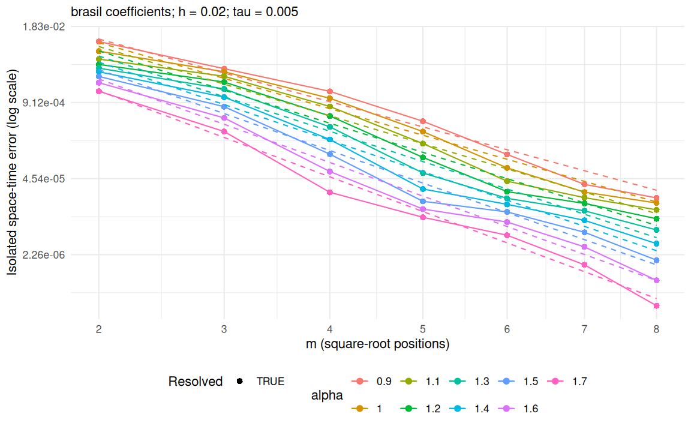
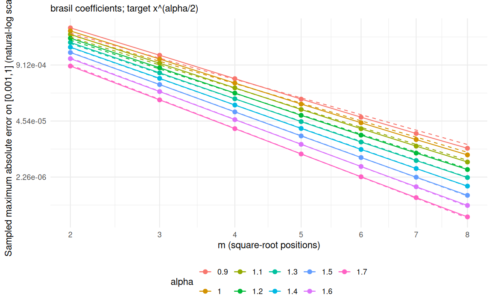

Experiments · Theory and functions
Knit loads the saved results and redraws the plots. The heavy
computation chunk has eval=FALSE and runs only when you
execute it manually. Run the chunks from top to bottom to generate new
results. Keep the parameters below consistent with the errors you
load.
# Initialize the R engine before purl() for interactive sessions.
knitr::opts_chunk$set(engine="R")
knitr::purl("brasilfunc.Rmd", output="brasilfunc.R", quiet=TRUE)## [1] "brasilfunc.R"source("brasilfunc.R")knitr::opts_chunk$set(message=FALSE, warning=FALSE, error=FALSE, cache=FALSE)library(ggplot2)The smooth data are \(u_0=a_0e_5\)
and \(f(t)=a_f A\sin(\omega t)e_7\) on
the length-(1,2) tadpole. Both evolutions use the same assembled
consistent P1 FEM matrices, analytic loads, and
interval-averaged forcing. For \(LV=CV\Lambda\) with \(V^\top CV=I\), the reference is \[
U_h^{k+1}=V\operatorname{diag}\!\left(
\frac{1}{1+\tau\nu\lambda_j^{\alpha/2}}\right)
V^\top(CU_h^k+\tau F^{k+1}).
\] The rational evolution applies shifted sparse solves with
installed rSPDE BRASIL coefficients and retains the mass
solve from the constant term. The numerical eigenbasis supplies an
independent reference and diagnostic; it does not replace the rational
matrix solver. The isolated error is \[
E_m^2=\tau\sum_{k=1}^N
(U_h^k-U_{h,m}^k)^\top C(U_h^k-U_{h,m}^k).
\] All orders use the same mesh and time grid. Dense
eigendecomposition is restricted to moderate meshes. For \(\alpha=2\), ordinary backward Euler
provides a control without rational approximation.
h <- 0.02
tau <- 0.005
m_max <- 8L
alpha_vector <- seq(0.9,1.7,0.1)
T_final <- 1
kappa <- 4
diffusion <- 1
initial_amplitude <- 10
forcing_amplitude <- 10
AAA <- 1
OMEGA <- pi# Saved files overwritten by this computation.
output_file <- "data_files/isolated_m_results.rds"
# Assemble the common FEM system and its complete numerical eigensystem.
coefficient_source <- "brasil"
stopifnot(length(h) == 1L, is.finite(h), h > 0, length(tau) == 1L, is.finite(tau), tau > 0, length(T_final) ==
1L, is.finite(T_final), T_final > 0, length(kappa) == 1L, is.finite(kappa), kappa > 0, length(diffusion) ==
1L, is.finite(diffusion), diffusion > 0, length(m_max) == 1L, is.finite(m_max), m_max >= 2, m_max ==
floor(m_max), m_max <= max(brasil_supported_orders()), length(alpha_vector) > 0, !anyDuplicated(alpha_vector),
all(is.finite(alpha_vector)), all(alpha_vector >= 0.5 & alpha_vector <= 2))
m_vector <- seq_len(m_max)
for (alpha in alpha_vector[alpha_vector != 2]) for (m in m_vector) brasil_coefficients(m, alpha/2)
N <- round(T_final/tau)
if (!is.finite(N) || N < 1 || N > 1e+06 || abs(T_final/tau - N) > 64 * .Machine$double.eps * max(1,
N))
stop("Choose T_final/tau to be an integer between 1 and 1e6.")
time_seq <- (0:N) * tau
if (3/h > 1200)
stop("Choose h >= 0.0025 for this complete-eigensystem notebook.")
data <- isolated_tadpole_data(h, kappa, initial_amplitude, forcing_amplitude)
spectrum <- isolated_discrete_spectrum(data$C, data$L)
# Compare sparse rational evolution with exact-discrete backward Euler.
rows <- list()
for (alpha in alpha_vector) {
reference <- isolated_exact_be_reference(data$C, spectrum, data$initial, data$spatial_load, time_seq,
alpha, diffusion, A = AAA, omega = OMEGA)
for (m in m_vector) {
rows[[length(rows) + 1L]] <- isolated_rational_error(data, spectrum, reference, m)
}
}
results <- do.call(rbind, rows)
control_reference <- isolated_exact_be_reference(data$C, spectrum, data$initial, data$spatial_load,
time_seq, alpha = 2, diffusion = diffusion, A = AAA, omega = OMEGA)
control <- isolated_rational_error(data, spectrum, control_reference, m = 1L)
results$noise_indicator <- pmax(results$absolute_error_disagreement, control$error, .Machine$double.xmin)
results$resolved <- results$product_error > 100 * results$noise_indicator
errors <- matrix(results$error, nrow = length(m_vector), dimnames = list(m = m_vector, alpha = alpha_vector))
fit_slope <- function(d) {
d <- d[is.finite(d$error) & d$error > 0, ]
if (nrow(d) < 2)
return(NA_real_)
unname(coef(lm(log(error) ~ sqrt(m), data = d))[2])
}
slopes <- do.call(rbind, lapply(alpha_vector, function(a) {
d <- results[results$alpha == a, ]
data.frame(alpha = a, benchmark = -2 * pi * sqrt(a/2), all_orders_slope = fit_slope(d), resolved_orders = sum(d$resolved),
resolved_only_slope = fit_slope(d[d$resolved, ]))
}))
# Sample the direct-power error on [0.001, 1] for the retained convergence plot.
unit_m_vector <- m_vector
unit_alpha_vector <- alpha_vector[alpha_vector != 2]
unit_x <- sort(1/exp(seq(0, log(1000), length.out=10001L)))
unit_rows <- list()
for (unit_alpha in unit_alpha_vector) {
unit_beta <- unit_alpha/2
for (unit_m in unit_m_vector) {
unit_roots <- brasil_coefficients(unit_m, unit_beta)
unit_error <- abs(brasil_power(unit_x, unit_roots) - unit_x^unit_beta)
stopifnot(all(is.finite(unit_error)))
unit_rows[[length(unit_rows) + 1L]] <- data.frame(alpha=unit_alpha, m=unit_m,
absolute_error=max(unit_error))
}
}
unit_max_errors <- if (length(unit_rows))
aggregate(absolute_error ~ alpha + m, do.call(rbind, unit_rows), max) else NULL
if (!is.null(unit_max_errors))
unit_max_errors$alpha_label <- factor(unit_max_errors$alpha, levels=unit_alpha_vector)
result <- list(parameters = list(h = h, tau = tau, m_max = m_max, alpha_vector = alpha_vector, T_final = T_final,
kappa = kappa, diffusion = diffusion, initial_amplitude = initial_amplitude, forcing_amplitude = forcing_amplitude,
AAA = AAA, OMEGA = OMEGA), results = results, errors = errors, slopes = slopes, diagnostics = spectrum$diagnostics,
control = control, unit_max_errors = unit_max_errors)
dir.create(dirname(output_file), recursive = TRUE, showWarnings = FALSE)
saveRDS(result, output_file)r <- readRDS("data_files/isolated_m_results.rds")
results <- r$results
errors <- r$errors
m_vector <- seq_len(m_max)
coefficient_source <- "brasil"
figure_dir <- "data_files/isolated_m"
dir.create(figure_dir, recursive=TRUE, showWarnings=FALSE)knitr::kable(errors, format.args=list(scientific=TRUE, digits=5))| 0.9 | 1 | 1.1 | 1.2 | 1.3 | 1.4 | 1.5 | 1.6 | 1.7 |
|---|---|---|---|---|---|---|---|---|
| 1.3483e-01 | 1.1213e-01 | 8.9969e-02 | 6.9866e-02 | 5.2497e-02 | 3.8035e-02 | 2.6373e-02 | 1.7263e-02 | 1.0396e-02 |
| 1.0086e-02 | 6.9075e-03 | 5.0501e-03 | 4.0905e-03 | 3.5349e-03 | 3.0601e-03 | 2.5474e-03 | 1.9900e-03 | 1.4216e-03 |
| 3.4597e-03 | 3.0630e-03 | 2.5636e-03 | 2.0438e-03 | 1.5556e-03 | 1.1281e-03 | 7.7420e-04 | 4.9640e-04 | 2.9020e-04 |
| 1.4156e-03 | 1.0774e-03 | 7.7980e-04 | 5.3640e-04 | 3.4870e-04 | 2.1210e-04 | 1.1890e-04 | 6.0000e-05 | 2.6400e-05 |
| 4.3580e-04 | 2.8980e-04 | 1.8060e-04 | 1.0480e-04 | 5.6600e-05 | 3.0100e-05 | 1.8500e-05 | 1.3700e-05 | 9.9000e-06 |
| 1.1760e-04 | 6.9400e-05 | 4.1000e-05 | 2.7100e-05 | 2.0900e-05 | 1.6500e-05 | 1.2200e-05 | 8.2000e-06 | 4.9000e-06 |
| 3.6200e-05 | 2.6600e-05 | 2.1400e-05 | 1.7100e-05 | 1.2700e-05 | 8.7000e-06 | 5.5000e-06 | 3.1000e-06 | 1.5000e-06 |
| 2.1200e-05 | 1.7400e-05 | 1.3300e-05 | 9.3000e-06 | 6.0000e-06 | 3.5000e-06 | 1.8000e-06 | 8.0000e-07 | 3.0000e-07 |
# Plot the matrix error and fit slopes in sqrt(m).
plot_data <- results
plot_data$alpha_label <- factor(plot_data$alpha, levels = alpha_vector)
guides <- plot_data
for (alpha in alpha_vector) {
index <- which(guides$alpha == alpha)
guides$error[index] <- guides$error[index[1]] * exp(-2 * pi * sqrt(alpha/2) * (sqrt(guides$m[index]) -
1))
}
p_m_isolated <- ggplot(plot_data, aes(sqrt(m), error, colour = alpha_label, group = alpha_label)) +
geom_line() + geom_point(aes(shape = resolved), size = 2) + geom_line(data = guides, linetype = "dashed") +
scale_shape_manual(values = c(`FALSE` = 1, `TRUE` = 16)) + scale_x_continuous(breaks = sqrt(m_vector),
labels = m_vector) + scale_y_continuous(trans = scales::log_trans(base = exp(1)), labels = scales::label_scientific()) +
labs(x = "m (square-root positions)", y = "Isolated space-time error (log scale)", colour = "alpha",
shape = "Resolved", subtitle = sprintf("%s coefficients; h = %g; tau = %g", coefficient_source,
h, tau)) + theme_minimal() + theme(legend.position = "bottom", plot.background = element_rect(fill = "white",
colour = NA))
ggsave(file.path(figure_dir, "plot.png"), p_m_isolated,
width=8, height=5, dpi=144)
knitr::include_graphics(file.path(figure_dir, "plot.png"))
Dashed lines have benchmark exponent \(-2\pi\sqrt{\alpha/2}\) against \(\sqrt m\), anchored at the first order. Open circles are below an empirical numerical-resolution indicator and are excluded from resolved-only fits. These are reference slopes, not certified error bounds.
fit_slope <- function(d) {
d <- d[is.finite(d$error) & d$error > 0, ]
if (nrow(d) < 2)
return(NA_real_)
unname(coef(lm(log(error) ~ sqrt(m), data = d))[2])
}
slopes <- do.call(rbind, lapply(alpha_vector, function(a) {
d <- results[results$alpha == a, ]
data.frame(alpha = a, benchmark = -2 * pi * sqrt(a/2), all_orders_slope = fit_slope(d), resolved_orders = sum(d$resolved),
resolved_only_slope = fit_slope(d[d$resolved, ]))
}))
knitr::kable(slopes, digits=5)| alpha | benchmark | all_orders_slope | resolved_orders | resolved_only_slope |
|---|---|---|---|---|
| 0.9 | -4.21489 | -4.71489 | 8 | -4.71489 |
| 1.0 | -4.44288 | -4.77516 | 8 | -4.77516 |
| 1.1 | -4.65973 | -4.83440 | 8 | -4.83440 |
| 1.2 | -4.86693 | -4.91242 | 8 | -4.91242 |
| 1.3 | -5.06567 | -5.00982 | 8 | -5.00982 |
| 1.4 | -5.25689 | -5.13113 | 8 | -5.13113 |
| 1.5 | -5.44140 | -5.27147 | 8 | -5.27147 |
| 1.6 | -5.61985 | -5.43279 | 8 | -5.43279 |
| 1.7 | -5.79281 | -5.63823 | 8 | -5.63823 |
unit_m_vector <- m_vector
unit_alpha_vector <- alpha_vector[alpha_vector != 2]
unit_max_errors <- r$unit_max_errors
if (!is.null(unit_max_errors)) {
unit_max_errors$alpha_label <- factor(unit_max_errors$alpha, levels = unit_alpha_vector)
unit_guides <- unit_max_errors
for (unit_alpha in unit_alpha_vector) {
unit_index <- which(unit_guides$alpha == unit_alpha)
unit_anchor <- unit_index[unit_guides$m[unit_index] == 1L]
unit_guides$absolute_error[unit_index] <- unit_max_errors$absolute_error[unit_anchor] * exp(-2 *
pi * sqrt(unit_alpha/2) * (sqrt(unit_guides$m[unit_index]) - 1))
}
p_unit_error_m <- ggplot(unit_max_errors, aes(sqrt(m), absolute_error, colour = alpha_label,
group = alpha_label)) + geom_line() + geom_point(size = 2) + geom_line(data = unit_guides,
linetype = "dashed") + scale_x_continuous(breaks = sqrt(unit_m_vector), labels = unit_m_vector) +
scale_y_continuous(trans = scales::log_trans(base = exp(1)), labels = scales::label_scientific()) +
labs(x = "m (square-root positions)", y = "Sampled maximum absolute error on [0.001,1] (natural-log scale)",
colour = "alpha", subtitle = sprintf("%s coefficients; target x^(alpha/2)", coefficient_source)) +
theme_minimal() + theme(legend.position = "bottom", plot.background = element_rect(fill = "white",
colour = NA))
}
ggsave(file.path(figure_dir, "unit-interval-error-convergence.png"), p_unit_error_m,
width=8, height=5, dpi=144)
knitr::include_graphics(file.path(figure_dir, "unit-interval-error-convergence.png"))
Sampled maximum direct-power errors.